Este soy yo en un campamento del kínder, recuerdo que llevaba una lámpara de mi abuelo y que cuando la necesite en la noche para buscar unas bolsas de dulces envueltas en papel aluminio no encendió fue hasta más noche cuando estábamos todos acostados mirando el techo todos aluzando fue hasta entonces cuando me di cuenta que las pilas estaban mal puestas. Esa cobija en la que estoy sentado aun la tenemos y la usamos me di cuenta hasta que mire esta foto de cuánto tiempo tiene esa cobija.
En primer año de iba en el kínder que se llama Gilberto Owen. Desde niño me encantaba participar en todo tipo de eventos, además me gustaba mucho jugar futbol pero nunca me inscribieron en un equipo. Participe en el desfile del 20 de noviembre. En la foto de la izquierda vamos mi hermana y yo a ella ya no le toco desfilar ese año.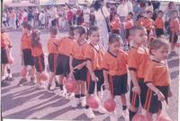 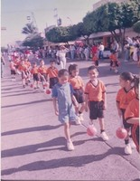
Yo me llevaba con unos compañeritos, éramos inseparables. Son los de la foto de la derecha. Desgraciadamente ya no se nada de ellos.
Me tuvieron que cambiar de kínder debido a que nos mudábamos mucho y aun no teníamos casa propia. En segundo año de kínder fui al jardín de niños Juan de Dios Bátiz Paredes. Ella era mi maestra en segundo año de kínder aún recuerdo su nombre porque se llama igual que mi hermana Lorena.
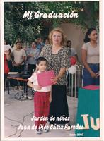Después de kínder estuve en tres primarias diferentes por lo mismo que aun no teníamos una casa propia. Recuerdo que yo participaba en todo lo que podía bailables, torneos de futbol del salón, entre otras actividades que se hacían. En primer año de primaria participe en una obra de ricitos de oro y los tres osos. Yo era el oso bebe. Aquí una foto.
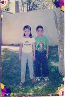En segundo año fui a otra escuela en el Campo 3. La foto de la derecha estoy con mi hermana en una de las posadas que hacían, creo que esta era del día del niño. Me gustaban mucho esos eventos porque habían muchas actividades para convivir con compañeros y los profesores.
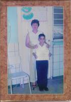En esta primaria gane el diploma de primer lugar en aprovechamiento escolar. Siempre estaba en los primero lugares pero nunca había en el primero fue muy emocionante para mí.
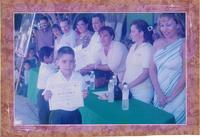En la primaria que estuve más tiempo fue en la General Lázaro Cárdenas en la colonia Alejandro Peña estuve desde tercer año hasta que me gradué.
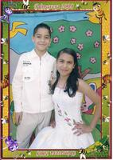En esa misma primaria cuando iba en quinto año participe no sé porque (ella me gustaba) para ser el rey feo. Recuerdo que no ganamos pero nos la pasamos súper bien. Decoramos una camioneta que tenia mi mamá en ese entonces y en ella nos subimos en el cofre para el rally. Se descompuso el claxon de la camioneta de tanto uso.
Yo siempre tenía una sonrisa para regalar. Y más cuando me gradué de la primaria.
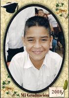 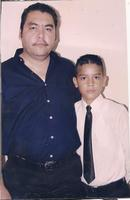 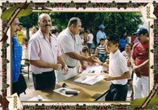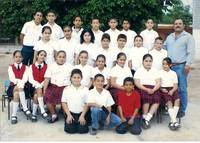Estos fueron mis compañeros y mi profesor de primaria. Este profesor en cualquier evento que tuviéramos que hacer algo para comer el siempre decía ceviche de sierra. Si era un convivió por el día del niño, el día de las madres, el día del maestro y aunque no hubiera una fecha especial el siempre para la comida decía "plebes hacemos un cevichito de sierra" y pues como el era el profesor siempre lo hacíamos. Estaba muy bueno no digo que no pero para todo ceviche de sierra como que no. Solo en una ocasión hicimos carne asada solo en una.